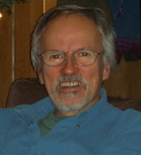

John Allison

John Allison
| In Manchester | At home | Through G4AI | |
| Telephone | +44-161-275 4170 | +44-1422-845624 | +44-871-662-7073 |
| Fax/Mobile | Fax: +44-161-273 5867 | Mobile: +44-7810-242262 | Fax: +44-7006-020-808 |
| John.Allison@manchester.ac.uk | John.Allison@3-C.Coop | John.Allison@g4ai.org | |
| Address |
Department of Physics and Astronomy The University of Manchester MANCHESTER M13 9PL |
9 Royd Terrace Hebden Bridge W. Yorks HX7 7BT |
Geant4 Associates International Ltd 9 Royd Terrace Hebden Bridge W. Yorks HX7 7BT |